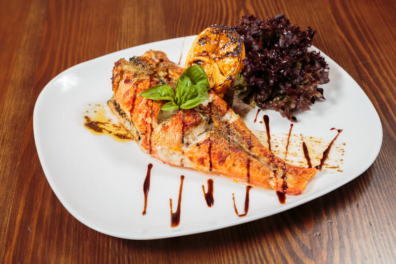

Resto-Afrik
Aux délices naturelles
Crevettes sautées aux pommes frites
Ce plat de crevettes est une spécialité des peuples de la côte du cameroun

Ingrédients
- crevettes frais:150g
- tomate:50g
- oignons:10g
- pommes:100g
Préparation
- Découper les pommes en fines lamelle
- Faire cuire les pommes à l'huile dans une poele
- Faire cuire les crevettes à la poele
- Mélanger la tomate aux oignons
- Mélanger le tout dans la poele des crevettes